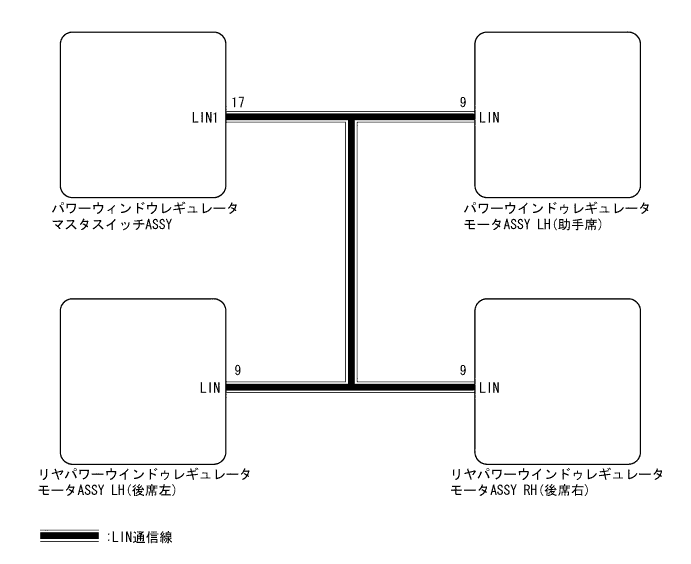
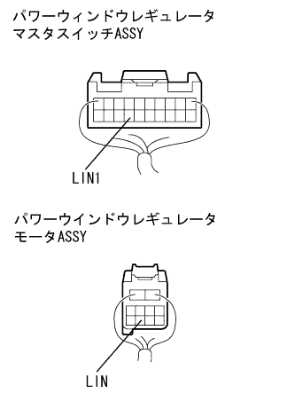

Power Window System Remote Operation of Other Seats Cannot Be Performed with Master Switch (Can Be Operated with Switch on Each Door) |

| Step 1 | Read TaSCAN Data (Main Body) |
Using SST (TaSCAN), inspect the large-scale body multiplex communication (LIN) connection status of the power window regulator motor assemblies (other than driver side).
| Item Name [Symbol] | Item Description/Display Range | Standard Value | Remarks |
|---|---|---|---|
| Power Window SW Connection Status [PWSC] | Connection status between power window regulator master switch assembly and body ECU/Display range: Not connected - Connected | Connected: When connection is detected Not connected: When connection is not detected | - |
| P-Seat Motor ECU Connection Status [PMRC] | Connection status between power window regulator motor assembly LH (front passenger side) and body ECU/Display range: Not connected - Connected | Connected: When connection is detected Not connected: When connection is not detected | - |
| RR-Seat Motor ECU Connection Status [RRMC] | Connection status between power window regulator motor assembly RH (rear right) and body ECU/Display range: Not connected - Connected | Connected: When connection is detected Not connected: When connection is not detected | - |
| RL-Seat Motor ECU Connection Status [RLMC] | Connection status between power window regulator motor assembly LH (rear left) and body ECU/Display range: Not connected - Connected | Connected: When connection is detected Not connected: When connection is not detected | - |
|
| ||||
| OK | |
| Step 2 | Read TaSCAN Data (Power Window SW) |
Using SST (TaSCAN), read the data on the status when the power window regulator master switch assembly is operated.
| Item Name [Symbol] | Item Description/Display Range | Standard Value | Remarks |
|---|---|---|---|
| D seat P/W AUTO SW [DPAS] | Driver side AUTO switch operation signal/display range: OFF - ON | ON: AUTO switch operating OFF: Neutral | - |
| P-Seat P/W Remote AUTO [DPRA] | Front passenger side switch AUTO operation signal/Display range: OFF - ON | ON: AUTO switch operating OFF: Neutral | - |
| RR-Seat P/W Remote AUTO [RRRA] | Rear right switch AUTO operation signal/Display range: OFF - ON | ON: AUTO switch operating OFF: Neutral | - |
| RL-Seat P/W Remote AUTO [RLRA] | Rear left switch AUTO operation signal/Display range: OFF - ON | ON: AUTO switch operating OFF: Neutral | - |
| P-Seat P/W Remote UP [RPRU] | Front passenger side switch UP operation signal/Display range: OFF - ON | ON: UP switch operating OFF: Neutral | - |
| RR-Seat P/W Remote UP [RRRU] | Rear right switch UP operation signal/Display range: OFF - ON | ON: UP switch operating OFF: Neutral | - |
| RL-Seat P/W Remote UP [RLRU] | Rear left switch UP operation signal/Display range: OFF - ON | ON: UP switch operating OFF: Neutral | - |
| P-Seat P/W Remote DOWN [RPRD] | Front passenger side switch DOWN operation signal/Display range: OFF - ON | ON: DOWN switch operating OFF: Neutral | - |
| RR-Seat P/W Remote DOWN [RRRD] | Rear right switch DOWN operation signal/Display range: OFF - ON | ON: DOWN switch operating OFF: Neutral | - |
| RL-Seat P/W Remote DOWN [RLRD] | Rear left switch DOWN operation signal/Display range: OFF - ON | ON: DOWN switch operating OFF: Neutral | - |
| Window Lock SW [WRCK] | Window lock switch lock operation signal/Display range: OFF - ON | ON: Lock switch operating OFF: Lock switch not operating | - |
|
| ||||
| OK | |
| Step 3 | Inspect LIN Communication Circuit (Applicable Location) |
 |
Disconnect the power window regulator master switch assembly connector and the power window regulator motor assembly (relevant seat) connector.
Using SST (Toyota electrical tester), measure the resistance between the terminals of the vehicle side wire harness connectors.
| Tester Connection (Terminal Symbol) | Condition | Standard |
|---|---|---|
| 17(LIN1) - 9(LIN) | Always | Below 1 Ω |
| Tester Connection (Terminal Symbol) | Condition | Standard |
|---|---|---|
| 17(LIN1) - 9(LIN) | Always | Below 1 Ω |
| Tester Connection (Terminal Symbol) | Condition | Standard |
|---|---|---|
| 17(LIN1) - 9(LIN) | Always | Below 1 Ω |
|
| ||||
| OK | ||
| ||